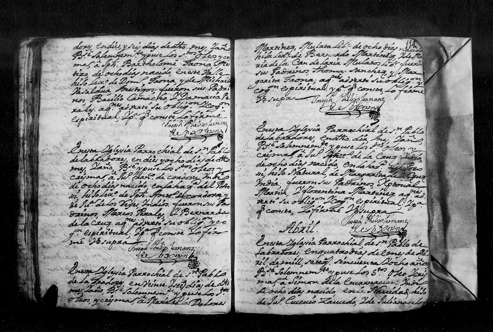

Expediente Histórico: Bautismo Joseph Bartolome Gauna

Manuscrito Original (Clic para ampliar)
Transcripción Paleográfica
En la Yglesia Parrochial de el Valle de s.n Pablo en dies y seis dias del mes de marzo del año de mill setesientos y sinquenta, y ocho, Bautise, y Puse oleo y crisma a vn niño esp.l de sinco dias de nacido: a quien puse pr. nomb.e Joseph Bartolome hijo lex.o de Blas gauna y de Juana Xaviera soto. Fueron sus padrinos [...] de lio Basaldua y maria de[...] garsa a quines avise su obligacion y parentesco espiritual y pr. q. conste lo firme.
Fr. Anto. Jph de la Peña